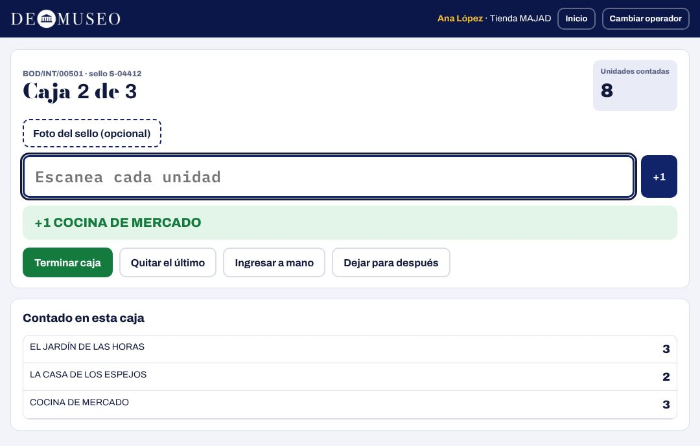
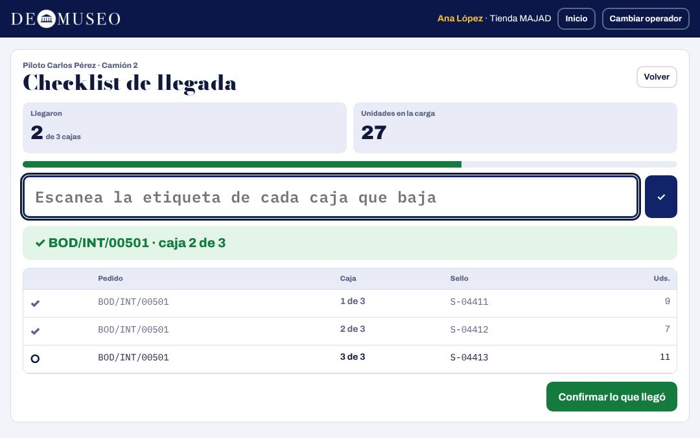
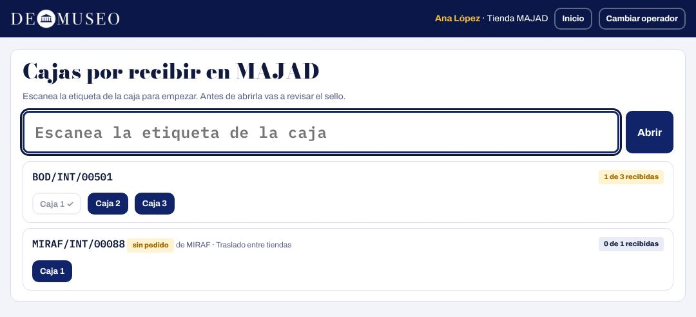
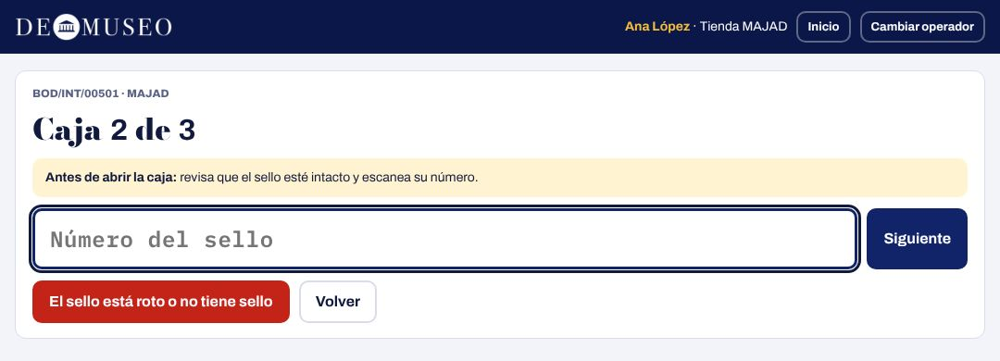
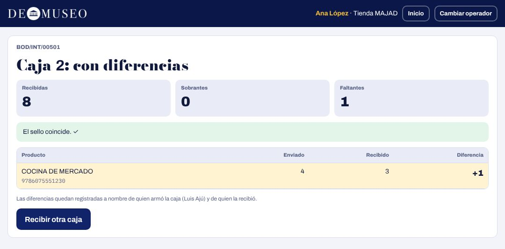

Cada caja se cuenta antes de entrar
Recibes al piloto, revisas el sello y escaneas todo.

Cuando llega mercadería, tres pasos
Entra con tu código de operador y tu PIN. Tras 60 minutos sin uso, la sesión se cierra sola.
- 1
Recibe al piloto
Escanea la etiqueta de cada caja que baja, sin abrirlas.
- 2
Revisa el sello
Antes de abrir cada caja, escanea el número del sello.
- 3
Cuenta todo
Escanea cada unidad. La app dice si falta o sobra algo.

Llegada del piloto
Lo que salió del CEDIS hacia tu tienda.
- 1
Elige el viaje del piloto que llegó.
- 2
Escanea la etiqueta de cada caja que te entrega. Se marca con un visto.
- 3
Confirmar lo que llegó. Si falta una caja, queda a cargo del piloto.

Recibir cajas
Escanea la etiqueta o toca la caja en la lista. Sin pedido marca devoluciones y traslados entre tiendas.

El sello va primero
- 1
Sello intacto: escanea su número. Si coincide, ya puedes abrir.
- 2
Sello roto o sin sello: toca el botón rojo, toma una foto y cuenta con cuidado. Queda como incidente.
- 3
El sello no corresponde: no abras la caja. Apártala y avisa a tu supervisor.
Contar la caja
- 1
Escanea cada unidad. Sale en verde lo que sumaste.
- 2
Quitar el último si escaneaste de más.
- 3
Ingresar a mano si un código no se deja leer.
- 4
Dejar para después: lo contado se guarda en este equipo.
- 5
Terminar caja compara contra lo que se envió.

El resultado
Si todo cuadra, dice todo correcto. Si no, muestra qué faltó o sobró. Las diferencias quedan a nombre de quien armó y de quien recibió, y el encargado de diferencias las revisa antes de ajustar Odoo.
Cuando la tienda envía
Rotación y devoluciones que salen de tu tienda, escaneando cada caja.
Devolución al CEDIS, traslado entre tiendas o urgente. Un supervisor lo aprueba antes de que se pueda recibir.
El menú te avisa; toca Continuar.
Si algo falla
- Esta caja ya se recibió
- Otra persona ya la terminó.
- El sello no corresponde a esta caja
- Escanea otra vez el sello de esa caja. Si sigue, no la abras y avisa al supervisor.
- No hay cajas en camino
- El CEDIS aún no carga tu envío.
- No hay conexión con el servidor
- Revisa el internet. Lo que llevas contado no se pierde.
- PIN incorrecto
- Si lo olvidaste, pídelo a tu supervisor.